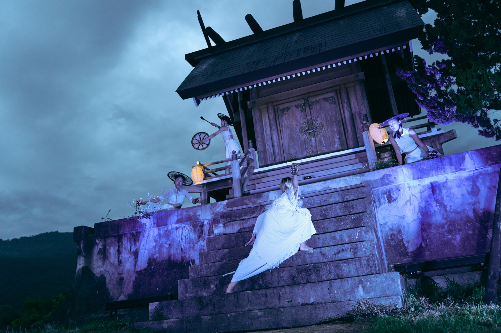
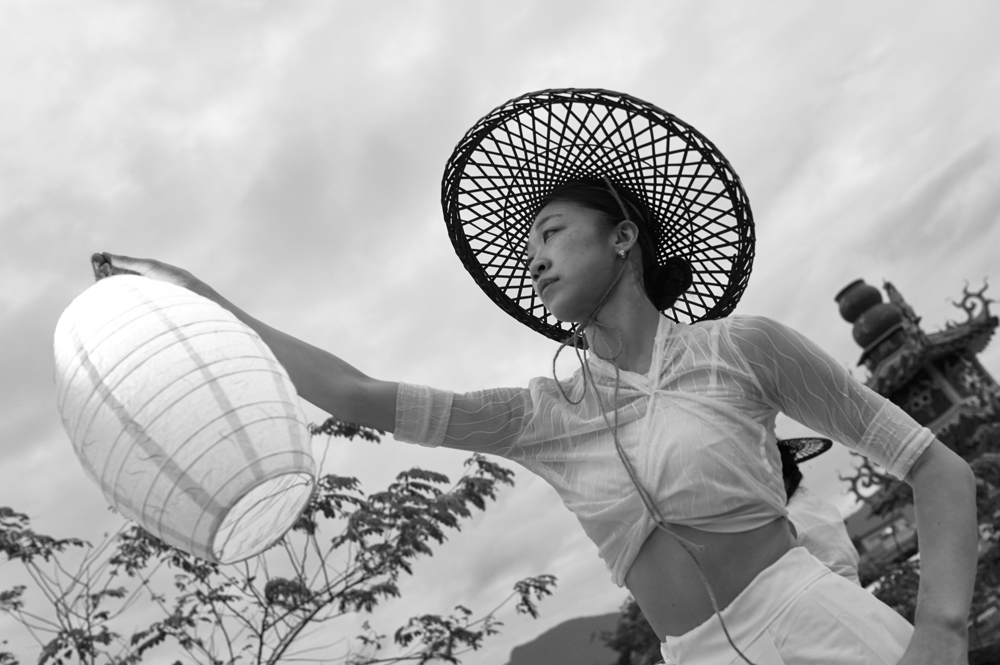
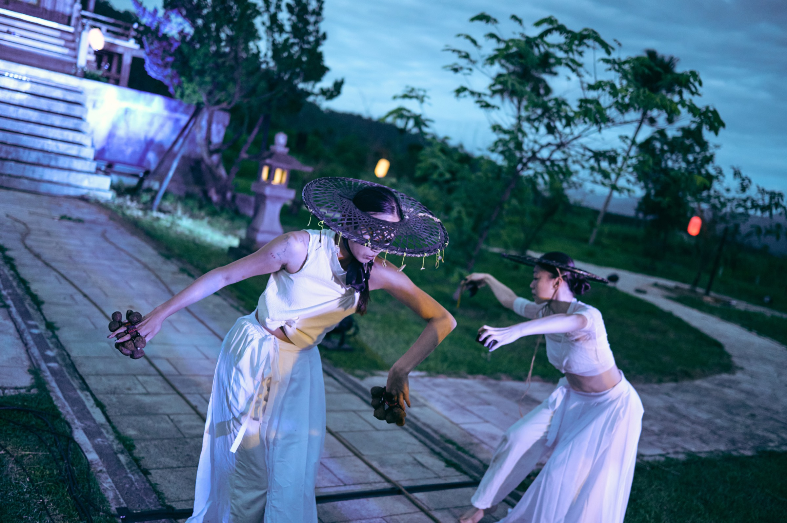
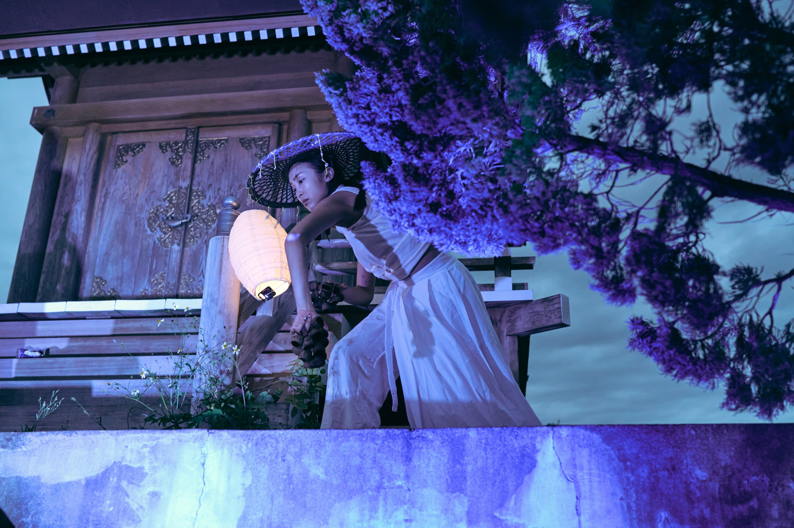
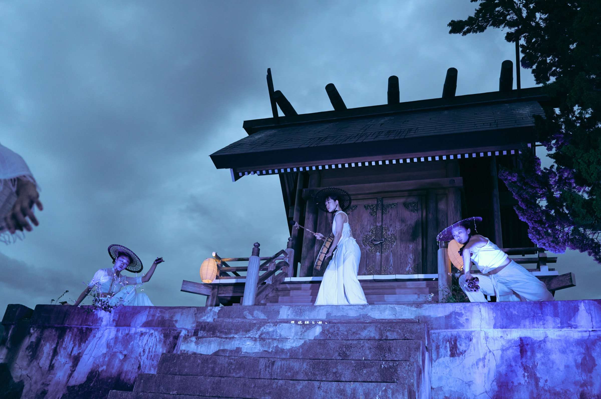
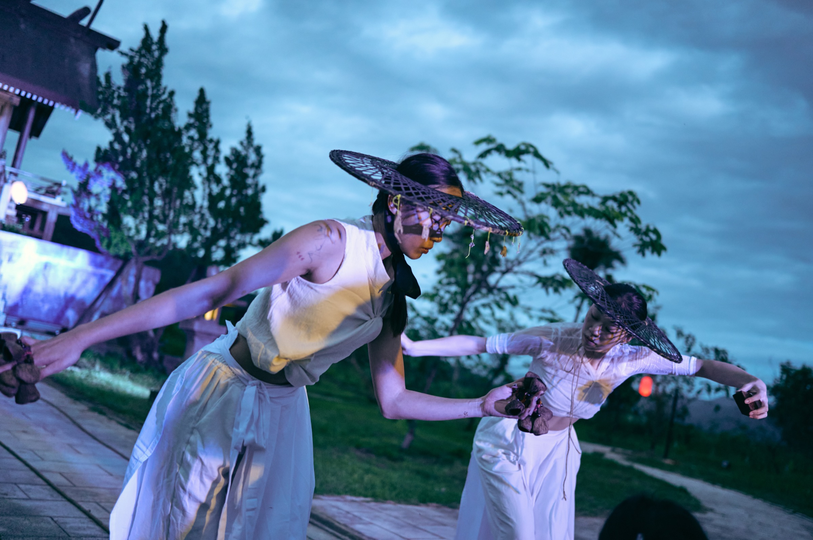
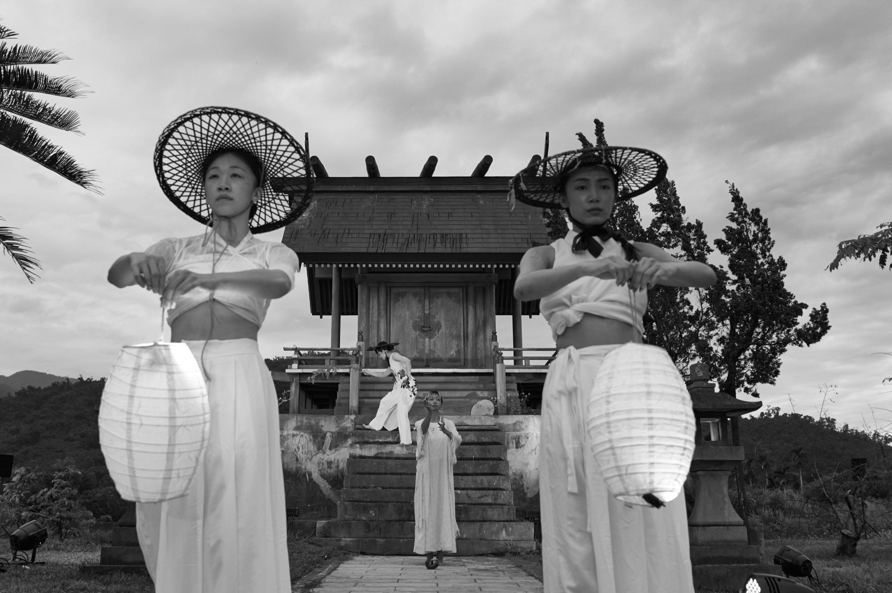
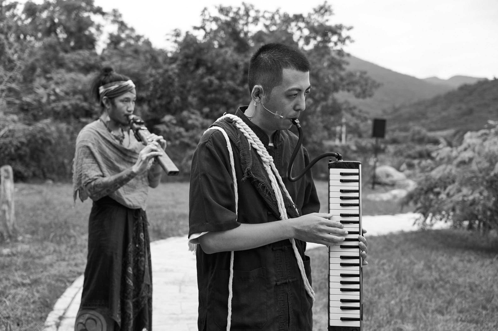

Series / 2022-2025
虎刺梅 x 鹿野神社 Crown of Thorns x Luye Shrine 從 2022 年的場域創作出發，讓身體進入鹿野神社的歷史空間，在植物、祭祀痕跡與地方記憶之間建立觀看路徑。
2025 年透過臺東藝穗節特色節目回放計劃重新整理此系列，使早期虎刺梅的身體語彙與神社場域再次相遇，也讓團隊的地方創作方法被更清楚地看見。
Context
Film
Trailer
Reviews
收錄外部評論與觀看書寫，讓觀眾從作品系列頁進一步閱讀他人如何理解人米犬頁製作的場域、身體與地方創作脈絡。






